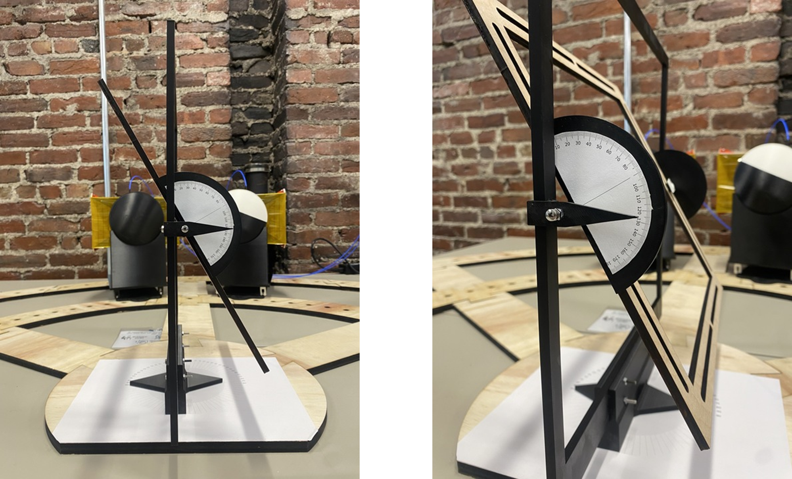
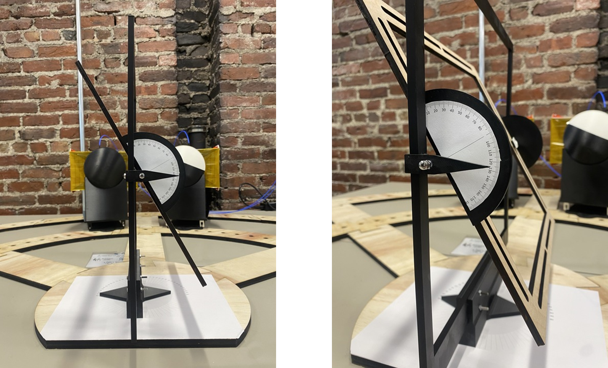

The jig pictured above is the last (and arguably the largest) jig I created during my co-op at Notch Inc. The antennas used took up too much space when used on tripods, so we wanted to store it vertically. That being said, I still wanted to keep it modular and adjustable, so I used T-slot aluminum extrusions to build a frame and mount for the antennas and metamaterial.
That said, I've also created other jigs for more scientific purposes- the wally jig and protractor jig (pictured below) were used to measure absorption about azimuth and elevation. The wally jig used a commercial Walabot stud finding sensor I reprogrammed to measure power returns against a baseline sheet of reflective foil. I designed it to have modular features and quick mounts that allowed for fast and easy switching for profiling a series of materials. The protractor jig used purpose-built horn antennas with custom lenses to measure the RF profiles. This jig was an upgrade to allow combined azimuth and elevation angles. The plywood baseplate was lasercut, and the holder is 3D printed out of PLA. The holder features a custom gimbal-like system to rotate about azimuth and elevation.
 

I spent the most time working with the wally jig. I wrote a jupyter notebook that allowed me to see a real-time graph of distance vs. power returns, automatically collected data and plotted it against a baseline and other materials, and then converted the data to polar plots and saved all of it. With this I could test as many materials as I wanted simultaneously, compare them, and then send the report to my managers without having to get out of my chair.